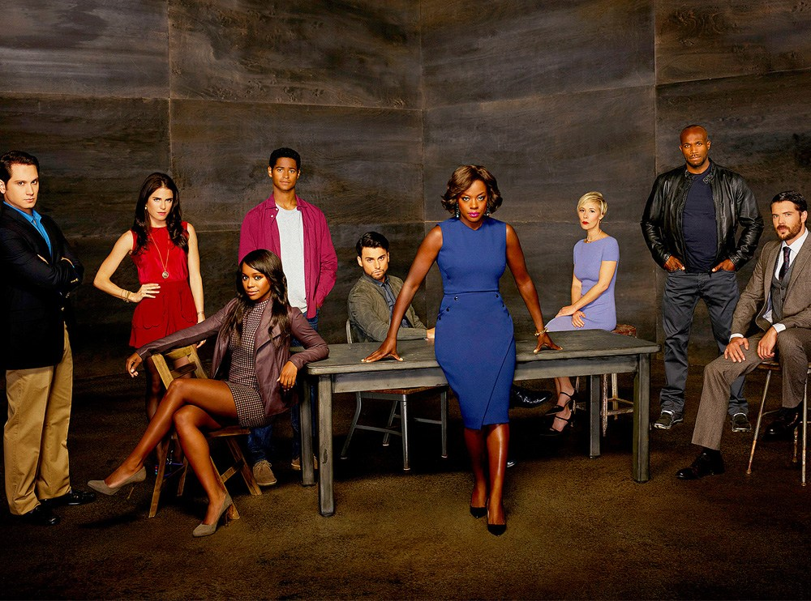

How to Get Away with Murder é uma série de televisão de suspense legal americana que estreou na ABC em 25 de setembro de 2014 e concluída em 14 de maio de 2020. A série foi criada por Peter Nowalk e produzida por Shonda Rhimes e ABC Studios. A série foi ao ar na ABC como parte de uma noite de programação, tudo sob a responsabilidade da produtora Shondaland de Rhimes.
Viola Davis estrela como Annalise Keating, uma professora de direito em uma prestigiosa universidade da Filadélfia que, com cinco de seus alunos, se envolve em uma trama de assassinato. A série contou com um elenco de Alfred Enoch, Jack Falahee, Aja Naomi King, Matt McGorry e Karla Souza como alunos de Keating, Charlie Weber e Liza Weil como seus funcionários e Billy Brown como um detetive do Departamento de Polícia da Filadélfia que é de Annalise amante. Da terceira temporada em diante, Conrad Ricamora foi promovido ao elenco principal depois de ter recorrido fortemente nas duas primeiras temporadas.
Por sua atuação, Davis recebeu aclamação da crítica; ela se tornou a primeira mulher negra a ganhar o Primetime Emmy Award de Melhor Atriz em Série Dramática, também ganhando dois Screen Actors Guild Awards de Melhor Ator Feminino em Série Dramática e o Prêmio Imagem de Melhor Atriz Drama Series. Davis também recebeu nomeações do Golden Globe Awards de Melhor Atriz em Série de Televisão, do Critics 'Choice Awards de Melhor Atriz de Série Dramática e da Television Critics Association no TCA Awards de Individual Achievement in Drama.
Elenco
